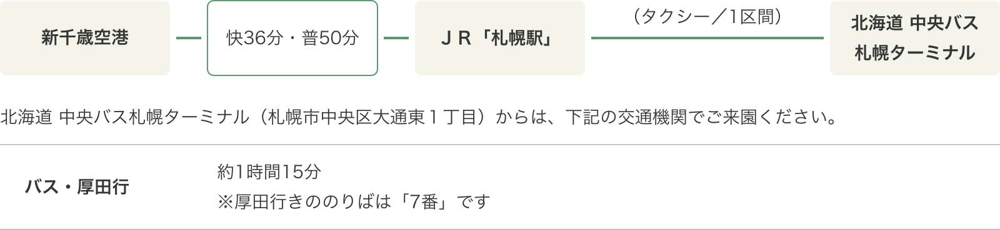
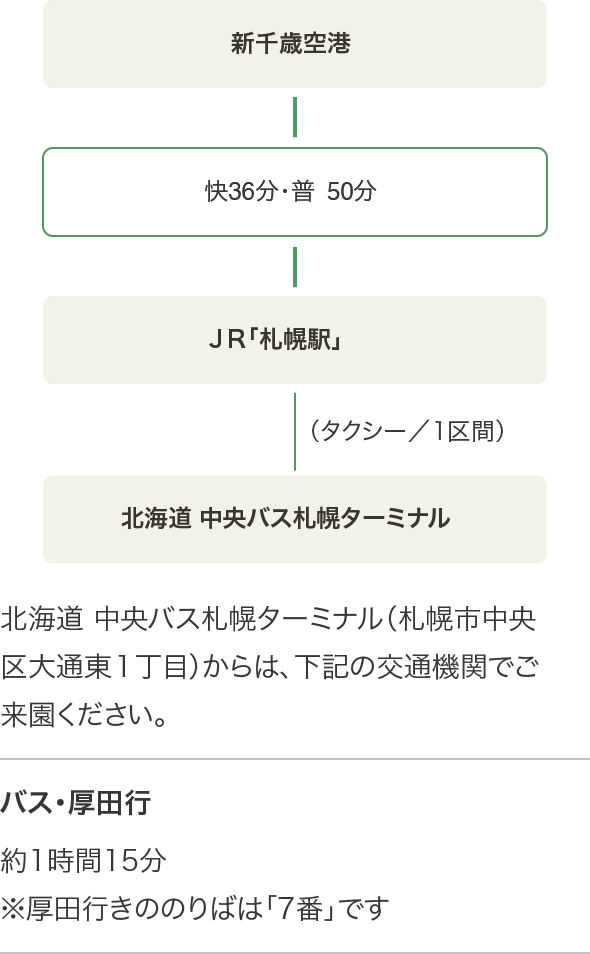

<!--メインエリア-->
<div class="main_area">

  <div class="GoogleMap">
    <iframe src="https://www.google.com/maps/embed?pb=!1m18!1m12!1m3!1d2902.7213408576345!2d141.4421534157679!3d43.32009247913408!2m3!1f0!2f0!3f0!3m2!1i1024!2i768!4f13.1!3m3!1m2!1s0x5f0b3fc18b3c3f01%3A0x84f2c0fc09ff328!2z44CSMDYxLTM1MjMg5YyX5rW36YGT55-z54up5biC5Y6a55Sw5Yy65pyb5p2l77yT77yS77yX!5e0!3m2!1sja!2sjp!4v1644303919205!5m2!1sja!2sjp" width="900" height="300" style="border:0;" allowfullscreen="" loading="lazy"></iframe>
  </div>
  <p class="ac_ttl sp">各交通機関でお越しの場合</p>
  <!--tab-->
  <div class="tab_wrap">
    <input id="tab1" type="radio" name="tab_btn" checked>

    <div class="tab_area">
      <label class="tab1_label pc" for="tab1"><span>電車・バスでお越しの場合</span></label>
      <!--sp-->
      <label class="tab1_label sp" for="tab1"><span>電車<br>バス</span></label>
    </div>

    <div class="panel_area">

      <div id="panel1" class="tab_panel">

        <div class="panel_img pc"></div>
        <div class="panel_img sp"></div>
        <div class="panel_img">
          <div class="heading">≪バス時刻表≫　<br class="sp">夏ダイヤ（4月1日〜11月30日）</div>
          <table class="timetable">
            <tr>
              <th>札幌ターミナル発　戸田墓園入口着</th>
              <td>
                <dl>
                  <dt>平日</dt>
                  <dd>11:23</dd>
                  <dd>11:42</dd>
                </dl>
                <dl>
                  <dt>土日祝</dt>
                  <dd>11:23</dd>
                  <dd>11:42</dd>
                </dl>
              </td>
            </tr>
            <tr>
              <th>戸田墓園入口発　札幌ターミナル着</th>
              <td>
                <dl>
                  <dt>平日</dt>
                  <dd>14:12</dd>
                  <dd>15:37</dd>
                </dl>
                <dl>
                  <dt>土日祝</dt>
                  <dd>14:14</dd>
                  <dd>15:39</dd>
                </dl>
              </td>
            </tr>
          </table>
        </div>
        <div class="panel_img">
          <div class="memo">
            ※バスの発着時刻は、毎年4月と12月に改正されますので、ご不明な点は下記までお問い合わせください。<br>
            北海道中央バス（株）札幌ターミナル <b>ＴＥＬ：011-231-0500</b><br>
            <br>
            ※上記時間に戸田墓園発着となるバスにつきましては、当墓園の園内バスが対応しております。開園時間外発着のバスは対応しておりません。
          </div>
        </div>

      </div><!-- END #panel1 -->

    </div>
    <!--END .panel_area-->

  </div>
  <!--END .tab_wrap-->

  <div class="dw-btns">
    <!--<div class="dw-btn">
<a href="../img/access/from-s_ac.pdf" download><p>駅からの地図　ダウンロード</p></a>
</div>-->
    <div class="dw-btn large">
      <a href="../img/access/memorial_park_map_01.pdf" download>
        <p>広域地図　ダウンロード</p>
      </a>
    </div>
  </div>

</div>
<!--END .main_area-->
